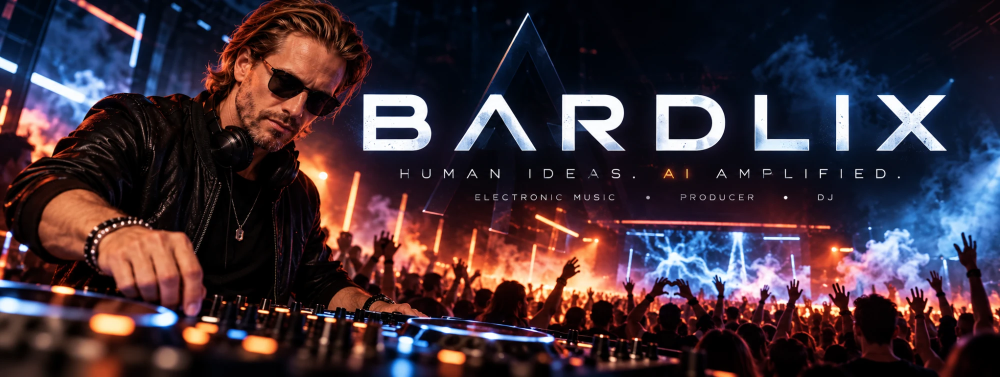

Human ideas. AI amplified.
Lyssna nuJag är Bardlix – elektronisk musikproducent och DJ. Jag bygger egna beats i FL Studio och bearbetar idéerna tillsammans med AI-verktyg för att komma fram till ljud jag inte hade hittat själv.
Musiken är byggd för dansgolvet: tunga baslinjer, stora drops och atmosfärer som tar med dig från första till sista låten.
Alla beats, melodier och arrangemang görs från grunden i FL Studio.
AI används som kreativt verktyg för idéer och ljud – riktningen är alltid mänsklig.
Egna tracks och energi som byggs live, med publiken som motor.
Hör av dig för spelningar, remixer eller samarbeten.